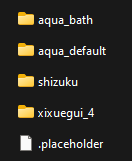
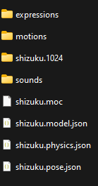

#
Live2D
本指南将引导您完成为您的SillyTavern体验设置和自定义Live2D扩展的过程。此扩展允许您为角色使用Live2D动画模型，为您的虚拟角色提供动态和互动的元素。
#
前置条件
在开始之前，请确保您满足以下前置条件：
分支选择：确保您正在使用最新的
staging分支的 SillyTavern，以访问最新的功能和更新。扩展安装：从扩展面板中的“下载扩展和资产”菜单（由堆叠块图标表示）安装“Live2D”扩展。
模型文件夹放置：将您的 Live2D 模型文件夹放置到
/data/<user-handle>/assets/live2d目录中。一个正确组织的live2d资产文件夹可能如下所示：
- Live2D 模型文件夹应包含 Live2D 模型所需的所有组件，例如表情、动作、纹理、声音和设置文件。特别是
***.model.json文件必须位于 Live2D 模型文件夹的根目录中，以便扩展能够检测到该模型。在此示例中，shizukulive2d 模型文件夹可能如下所示：

- 注意：模型也可以放置在特定角色的文件夹中，例如
/data/<user-handle>/characters/Shizuku/live2d/。但是，角色文件夹中的模型仅对该特定角色可访问。
- Live2D 模型文件夹应包含 Live2D 模型所需的所有组件，例如表情、动作、纹理、声音和设置文件。特别是
#
扩展设置
Live2D 扩展提供了多种设置，以自定义动画模型的行为。以下是主要设置：
#
全局设置
启用：
- 勾选此复选框以激活扩展，使您的 Live2D 模型能够在 SillyTavern 中进行交互。
- 如果您只想使用普通精灵，可以禁用该扩展。
- 当您想在群聊中移动普通精灵时，可以禁用该扩展，并在准备使用 Live2D 模型时重新启用。
跟随光标：
- 勾选此复选框以使 Live2D 模型跟随您的光标，前提是该模型支持此功能。
自动发送互动：
- 勾选此复选框以在您点击具有映射消息的区域时自动触发角色互动（有关详细信息，请参阅命中区域部分）。
#
调试设置
这些设置帮助您控制 Live2D 模型的行为和可见性，以便进行调试。
动画前重置模型：
- 启用此复选框以在任何动画之前重新加载模型。这会强制动画开始，并允许您在必要时快速点击。一些模型可能需要这样做，以确保动画从兼容状态开始。
显示模型框架：
- 启用此复选框以显示模型框架，使您更容易识别点击拖动模型的位置。它还会显示命中区域（如果可用）。将鼠标悬停在命中区域上将显示其名称。
重新加载按钮
- 点击此按钮以重新加载每个 live2d 模型。在出现故障的情况下使用它。
#
角色选择
这些设置允许您管理角色并为其分配 Live2D 模型。
刷新按钮：
- 点击刷新按钮以更新当前聊天中的角色列表。
选择角色：
- 使用下拉列表选择一个角色以分配 Live2D 模型。
移除按钮：
- 点击此按钮以删除角色的所有分配模型。将出现确认提示以确认删除。
#
模型选择
刷新按钮：
- 如果您的Live2D模型未出现在列表中，请点击刷新按钮。
选择模型：
- 从列表中选择一个模型以将其分配给选定的角色。
- 模型可以位于资产文件夹或当前角色的文件夹中。
- 列表显示模型文件夹名称、其来源（资产或角色）以及检测到的模型设置文件的名称。
- 请注意，一些模型文件夹可能包含同一模型的不同版本。您可以尝试不同的模型文件，以查看哪个效果最佳。
- 如果选择无，将使用正常的精灵（如果有的话）。
- 设置是按角色和模型保存的。
#
模型设置
模型缩放:
- 使用滑块调整模型的大小，使其变大或变小。
模型中心 X 偏移:
- 使用滑块改变模型相对于窗口中心的水平位置。
模型中心 Y 偏移:
- 使用滑块调整模型相对于窗口中心的垂直位置。
#
备注
- 设置已保存并会在不同的聊天中延续。
- 您还可以使用鼠标拖动模型，这些设置将被更新并保存。
- 使用这些用户界面设置将您的模型重新带回屏幕，如果您不小心将其移出视野。还可以勾选“显示框架”复选框，以清楚地看到可以点击以拖动模型的位置。
#
模型对话
Param mouth open Y id
- 从列表中选择与模型嘴巴 Y 值对应的参数 ID。并非所有模型都有该参数，名称可能因模型而异。通常类似于 "PARAM_MOUTH_OPEN_Y" 或 "ParamMouthOpenY"。在从列表中选择元素时，请检查模型；它会尝试运行说话动画。如果嘴巴移动了，那就对了！
嘴巴运动速度
- 调整滑块以改变嘴巴动画的运动速度。
每个字符的时间
- 设置每个字符的时间持续。对话动画的持续时间将是此时间乘以消息的字符数量。
#
备注
- 这个嘴部动画并不是在每个模型和每个动画上都能使用。即使您的模型有嘴部移动的动画，也并不意味着这个扩展可以控制嘴部动画。如果参数列表中没有任何内容，您的模型可能是使用过于旧的 Live2D 版本制作的，无法正确访问参数。
#
模型动画
起始动画
- 从列表中选择一个表情和动作，当与角色开始聊天时将播放。如果需要在一段时间内隐藏角色以达到完美效果，您还可以添加一个延迟，在此期间模型将不可见。
默认动画
- 从列表中选择一个表情和动作，当角色发送消息时将播放。在使用分类表情扩展时，使用备用动画。
#
备注
- 当您在列表中选择一个动画时，它将播放。
- 使用重播按钮重新播放所选动画。
- 一些模型的表情定义为动作。
- 如果列表中没有显示任何内容，可能是您的模型设置文件没有定义表情/动作。
#
点击区域映射
默认点击动画
- 从列表中选择一个表情和动作，当你点击模型时将播放。你还可以设置一条将作为用户消息发送的消息。
点击区域
- 如果模型有点击区域，它们将被列出，你可以为每个区域分配一个动画/消息。
#
备注
- 某些模型没有命中区域，但默认点击会对所有区域进行检测。
- 如果您在没有映射的命中区域上点击或在任何命中区域外点击，默认点击将被触发。
- 命中区域的优先级在模型中定义；例如，“嘴”在“头”内部。如果它没有正常工作，可能是由于模型文件的问题。
- 对于某些模型，动画需要完成后才能开始另一个动画。如果您想强制刷新并重复动画，请使用调试复选框。
#
分类表情映射
要求
- 需要使用分类表情扩展；否则，将回退到默认动画。
映射
- 对于分类扩展检测到的每种情感，您可以分配一个表情/动作动画。
#
备注
- 如果在接收到新消息时，之前的动画尚未完成，则新动画可能不会播放。此行为取决于 Live2D 模型。如果您想强制播放动画，请使用调试复选框。
感谢您遵循本指南！您的 SillyTavern 体验现在已通过动画和互动的 Live2D 模型得到了丰富。